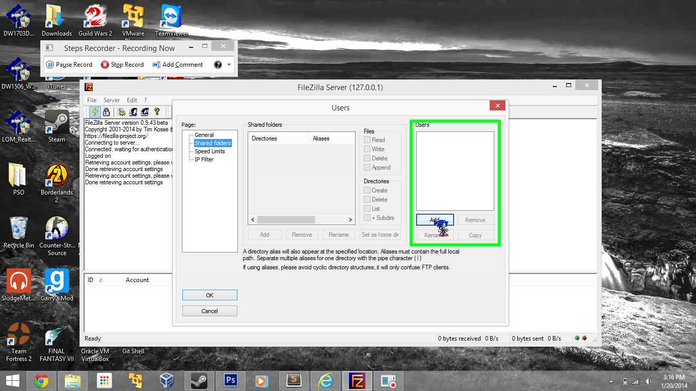
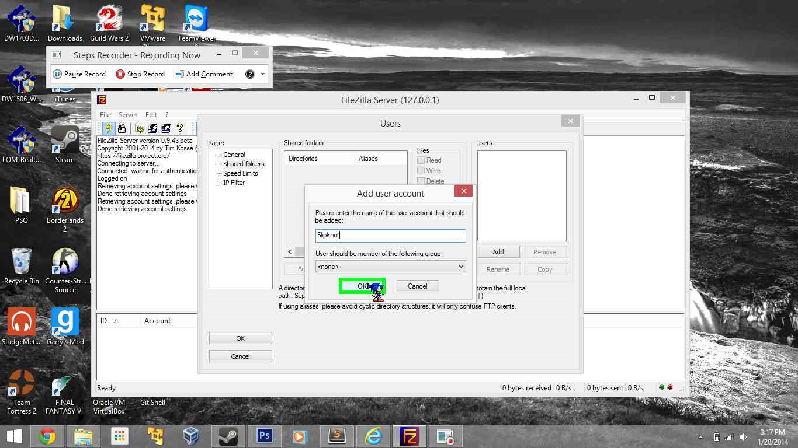
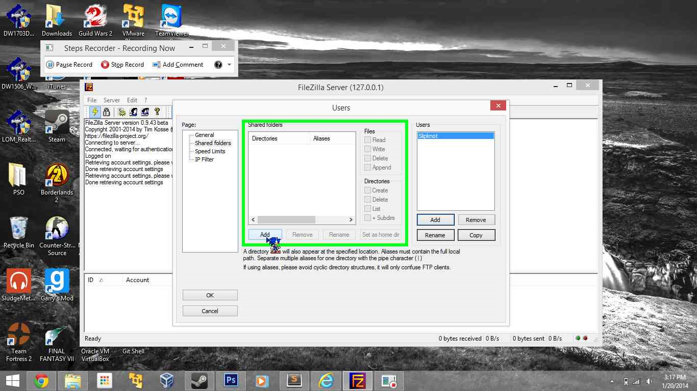
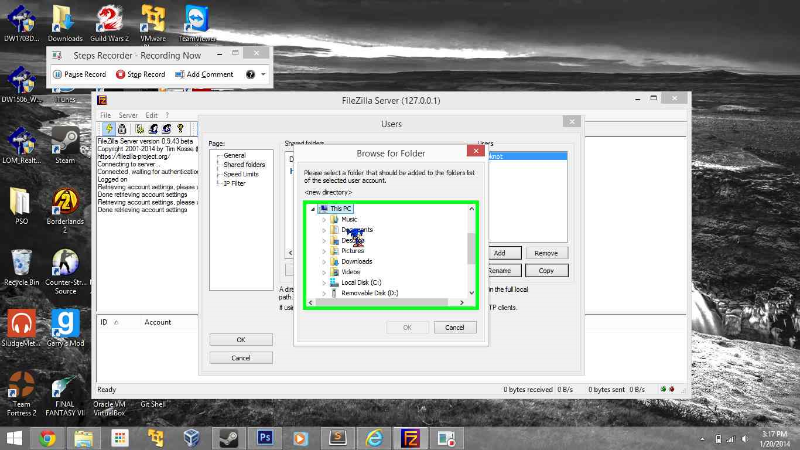

This website will show you step by step how to make an FTP server and an HTTP server.
How to make an FTP server
- First, you need to download FileZilla Server here.
- Once FileZilla Server is installed, go to settings and make sure the server listens to port 21.
- Now go to Passive Mode Settings and enter your IP address and check the custom port range and enter ports 50000 to 53000.
- Now go to Admin Interface Settings and enter a password for your server.
- Now click OK and you're done.
- Now go to Edit and click Users
- Now go to shared folders.
- In the Users section click Add 
- Now enter the name of the user 
- Then add a directory  
- Click OK and you're done with the server


- You can install the FileZilla client here.
- After you have it installed, type in the Host IP, Username, and password
- After that, you should connect
- on the bottom right there is a panel with files that you can download. Right click and click download.
-
.png)
Now you have to connect a client to the server to show that it works.
.png)
.png)